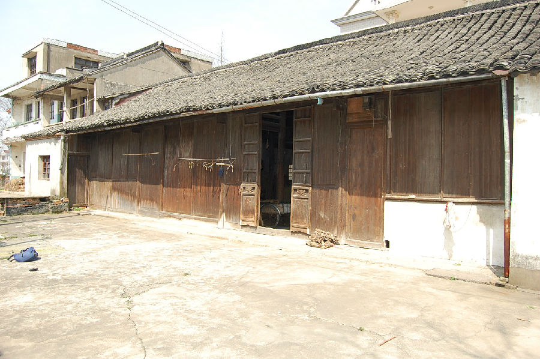

嘉兴市文物保护网 · 市级文物保护点 · 2020-11-06 · 原文

建设村冯氏民宅位于嘉兴市秀洲区王店镇建设村13组三家村北22号。据形制判断为民国时期建筑，现作为堆放草料的仓库。坐北朝南，为一进五开间平房，占地面积200平方米，面阔20.96米，进深9.52米，顶高5.13米。硬山顶，屋顶铺设望板，抬梁式九檩，前后各三步，用四柱。雀替为素面，排门内侧雕花，外为素面。东侧另新搭建一开间。建设村冯氏民宅形制规矩，做工考究，木构件保存完整，具有较高的历史和科学价值。2010年公布为嘉兴市文物保护点。